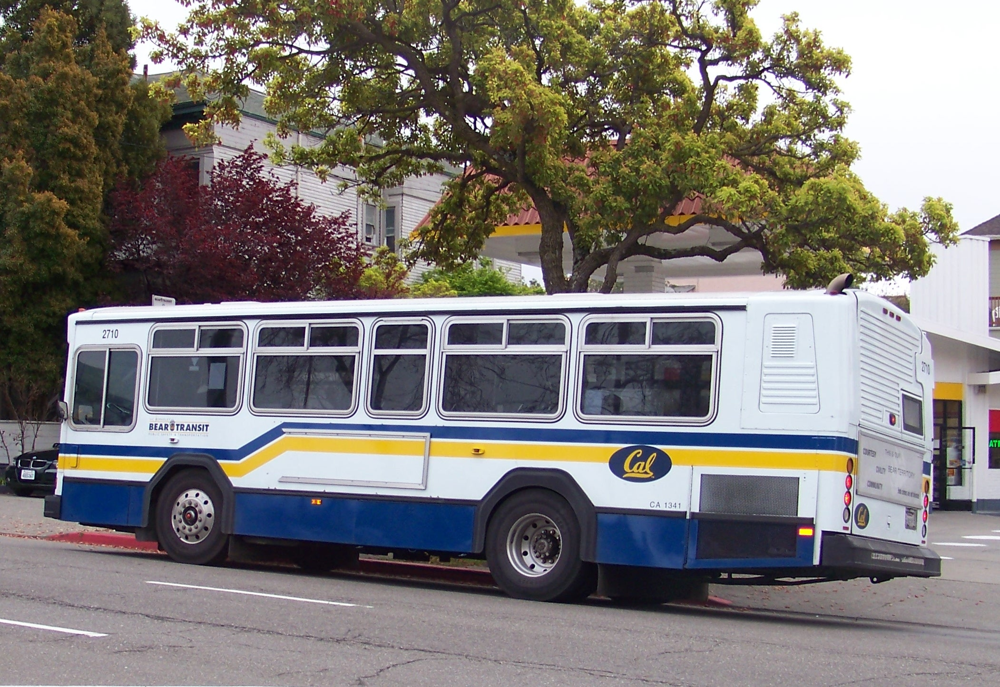

Transit in Berkeley
Bear Transit
Part of a Series on Berkeley transit, you may also be looking for:
Bear Transit is UC Berkeley's private shuttle system that is available for all residents of Berkeley however Cal students can ride for free whereas non-Cal students must pay a fare. Show your Cal I.D. to the drive for pay a $2.50 fare to ride. The system links major areas of UC property throughout the Bay Area.

Lines By Ridership:
- Central Line
- Perimeter Line
- Hill Line
- Richmond